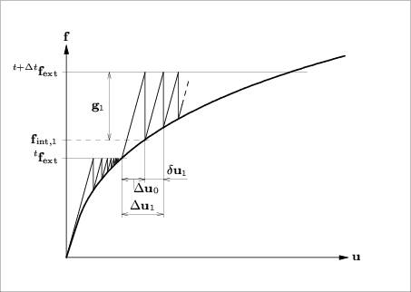

The Linear Stiffness
iteration method uses the linear stiffness matrix all the time. This method
potentially has the slowest convergence, but it costs the least time per
iteration since the stiffness matrix needs to be set up only once. Moreover, as
in GEOMEC always a direct solver is applied, the costly decomposition has to be
performed only once. The Linear Stiffness method can also be advantageous if it
is desirable that the stiffness matrix remains symmetric where the tangential
stiffness matrix would become non-symmetric. In GEOMEC the stiffness matrix is
non-symmetric in case the friction angle is not equal to the dilatation angle.